#|eval: false
# install.packages("usethis")
# library(usethis)
# use_git_config(user.name = "Monchi", user.email = "monchi@example.org")Programación colaborativa y reproducible
Introducción a la programación en R (3ºed)
Objetivos
Comprender la importancia de los flujos de análisis reproducibles.
Comprender la funcionalidad y potencialidad de Git y GitHub en análisis científicos.
Comprender el flujo de trabajo entre Git, GitHub y RStudio.
Aprender las bases de la programación literaria en R.
Aprender los fundamentos básicos de Quarto.
Generar documentos reproducibles en R.
Introducción
La reproducibilidad, entendida como la capacidad que tienen algunos trabajos o proyectos de ser recreados de forma independiente a partir de los mismos datos y el mismo código que utilizó el equipo original, es una condición sine qua non del método científico. Para hacer ciencia se deberían utilizar herramientas informáticas que garanticen la trazabilidad de todo el proceso, incluyendo desde la gestión y análisis de datos a la presentación de los resultados.
Seguro que estás familiarizado con algunos problemas comunes relacionados con la falta de trazabilidad en el flujo de trabajo… click aquí.
Para ayudar a evitar estas situaciones y otros desafíos en los flujos de trabajo científicos hoy vamos a conocer el sistema de control de versiones Git, el repositorio remoto GitHub y el sistema de publicación Quarto. Estas herramientas están siendo cada vez más útiles en ciencias, ya que permiten crear documentos reproducibles (incluyendo texto y análisis) mientras se registran los cambios en RStudio y se facilita la colaboración entre múltiples usuarios.
Introducción a Git y GitHub
Qué es Git
Git (https://git-scm.com/) y GitHub (https://github.com/) están ganando cada vez más importancia en diversos campos de estudio a medida que el volumen de datos aumenta y los análisis se hacen más complejos. Aunque existen multitud de manuales disponibles gratuitamente sobre cómo utilizar Git y GitHub, estas herramientas son complejas. El propósito original de Git era ayudar a grupos de desarrolladores informáticos a trabajar en colaboración en grandes proyectos de software, por lo que puede resultar enrevesado, hay múltiples soluciones para el mismo problema y tiene una curva de aprendizaje pronunciada.
Git es un sistema avanzado de control de versiones (como el “control de cambios” de Microsoft Word) distribuido (Blischak, Davenport, and Wilson 2016; Ram 2013). Git permite rastrear el progreso de un proyecto a lo largo del tiempo ya que hace “capturas” del mismo a medida que evoluciona y los cambios se van registrando. Este sistema permite ver qué cambios se hicieron, quién los hizo y por qué, e incluso volver a versiones anteriores.
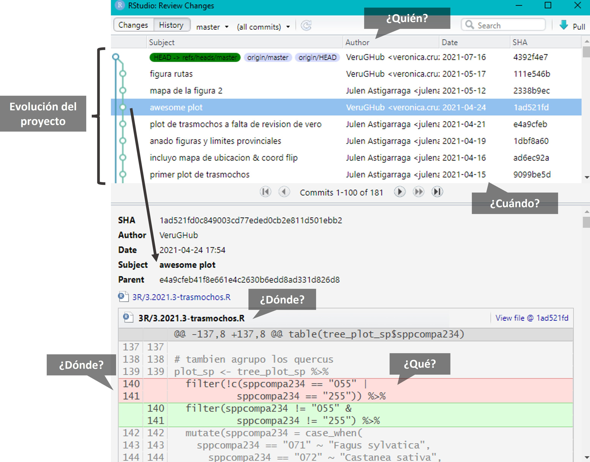
Además, Git facilita el trabajo en paralelo de varios participantes. Mientras que en otros sistemas de control de versiones (p. ej. Subversion (SVN, https://subversion.apache.org/) o Concurrent Versions System (CVS, http://cvs.nongnu.org/)) hay un servidor central y cualquier cambio hecho por un usuario se sincroniza con este servidor y de ahí con el resto de usuarios, Git es un control de versiones distribuido que permite a todos los usuarios trabajar en el proyecto paralelamente e ir haciendo “capturas” del trabajo de cada uno para luego unirlos. Otras alternativas de control de versiones distribuido comparables a Git son Mercurial (https://www.mercurial-scm.org/) o Bazaar (https://bazaar.canonical.com/), pero Git es con diferencia el más utilizado.
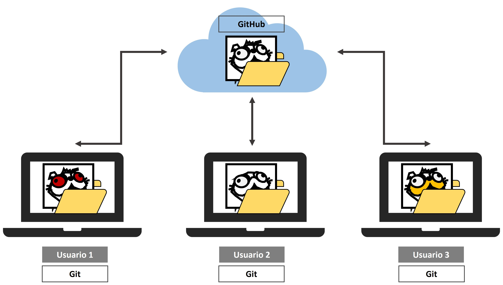
Qué es GitHub
GitHub es un servidor de alojamiento en línea o repositorio remoto para albergar proyectos basados en Git que permite la colaboración entre diferentes usuarios o con uno mismo (Galeano 2018; Perez-Riverol et al. 2016). Un repositorio es un directorio donde desarrollar un proyecto que contiene todos los archivos necesarios para el mismo. Aunque existen distintos repositorios remotos (p. ej. GitLab, https://gitlab.com/, o Bitbucket, https://bitbucket.org/) con funcionalidad similar, GitHub es hoy en día el más utilizado. GitHub registra el desarrollo de los proyectos de manera remota, permite compartir proyectos entre distintos usuarios y proporciona la seguridad de la nube entre otras funciones.
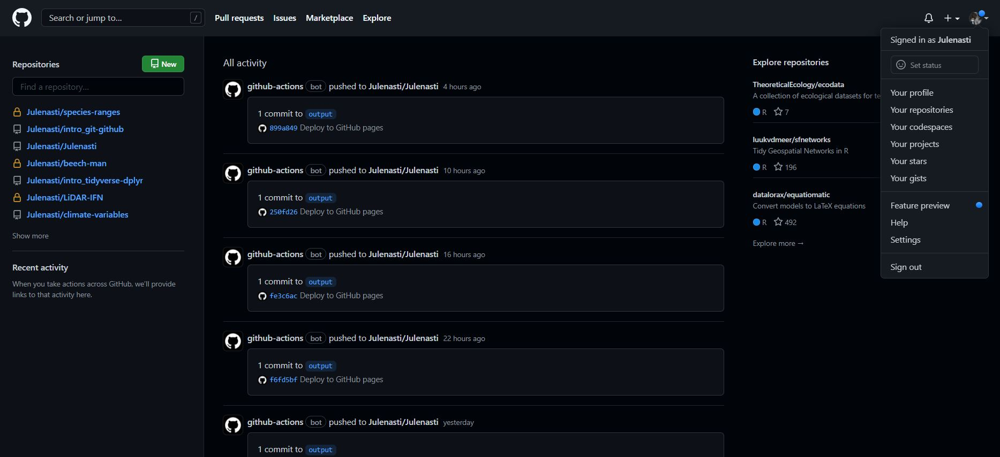
Cuando se trabaja en proyectos colaborativos, la base de la interacción entre Git y GitHub es que todos los colaboradores de un proyecto están de acuerdo en que GitHub contiene la copia principal del proyecto, es decir, GitHub contiene la copia centralizada del control de versiones distribuido o descentralizado.
Instalación de Git
En este punto es necesario que tengas instalada la versión más reciente de R (https://cloud.r-project.org/), RStudio (https://www.rstudio.com/products/rstudio/download/), Git (https://happygitwithr.com/install-git.html) y una cuenta en GitHub (https://github.com/) creada.
Preséntate a Git (Chapter 7: Git-Intro)
💡Debes usar el correo electrónico asociado a tu cuenta de GitHub
En la terminal, compueba que has instalado Git correctamente:
git --versionPara ver el usuario utilizado para configurar Git:
git config user.namePara ver a qué cuenta de correo está asociado Git:
git config user.emailPara ver tanto el usuario como el correo asociado:
git config --global --list
⚡¿Qué es el shell? El shell (o terminal) es un programa en tu ordenador cuyo trabajo es ejecutar otros programas (ver https://happygitwithr.com/shell.html#shell). RStudio incorpora una terminal que se puede utilizar para interactuar con Git; sin embargo, también incorpora una pestaña llamada “Git” que contiene las funcionalidades básicas de Git y facilita mucho su uso.
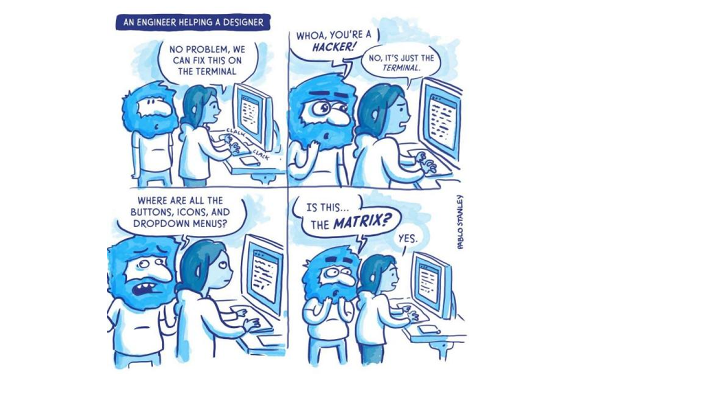
💡Para la resolución de problemas durante la instalación recomendamos mirar aquí: https://happygitwithr.com/troubleshooting.html
Genera un PAT (Personal Access Token) para HTTPS
Git puede comunicarse con un servidor remoto utilizando uno de los dos protocolos: HTTPS o SSH. Nosotros utilzaremos HTTPS con personal access token (PAT, https://happygitwithr.com/https-pat.html).
#|eval: false
# install.packages("gitcreds")
# library(gitcreds)
# create_github_token() # generar un token, elegir temporalidad
# gitcreds_set() # acceder al Git credential store👀 Conviene describir el propósito del token en el campo Note, porque se pueden tener varios PATs. No podrás volver a ver este token, así que no cierres ni salgas de la ventana del navegador hasta que almacenes el PAT localmente. ¡Trata este PAT como una contraseña!
Repositorios y proyectos
Un repositorio es como un “contenedor” donde desarrollar un proyecto.
Para crear un repositorio en GitHub damos a “+ New repository”. Aquí se indica el nombre, una pequeña descripción, y si quieres que sea público o privado. Se recomienda iniciar el repositorio con un archivo “README” (Initialize this repository with a README) para recoger cualquier información esencial para el uso del repositorio (estructura, descripción más detallada del contenido, etc.).
En RStudio, creamos un nuevo proyecto y lo conectamos al repositorio: File > New project > Version control > Git > copiar el URL del repositorio que hemos creado de GitHub (está en la página principal de nuestro repositorio, en “clone or download”). Seleccionamos el directorio local donde queremos guardar el proyecto y pulsamos en “Create project”.
Si vamos al directorio local seleccionado, encontraremos la carpeta conectada a Git y GitHub que hemos creado en nuestro ordenador. Podemos copiar aquí todos los archivos que nos interesan para el proyecto (datos, imágenes, etc).
💡Para más información sobre cómo clonar el repositorio en GitHub (repositorio remoto) en nuestro ordenador (repositorio local) ver https://happygitwithr.com/rstudio-git-github.html para hacerlo desde RStudio y Galeano (2018) para hacerlo mediante la línea de comandos.
💡En caso de querer conectar un antiguo proyecto de RStudio a Git y GitHub, puedes seguir los pasos que se describen aquí: https://happygitwithr.com/existing-github-first.html.
Una vez que el repositorio remoto de GitHub y el proyecto de RStudio están conectados, en RStudio ve a la pestaña Git.
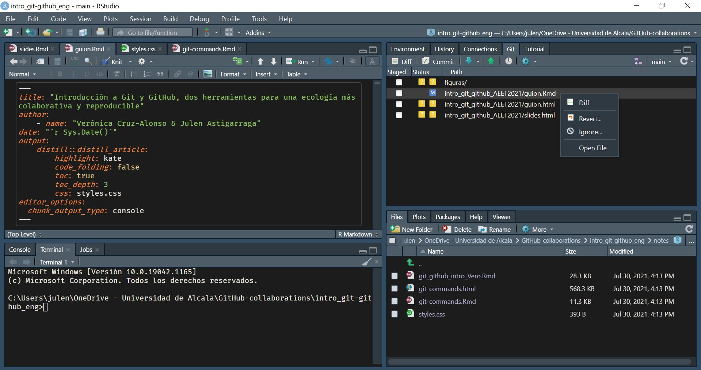
Git ignore
Al crear un repositorio se recomienda crear un archivo “.gitignore”. Este archivo contendrá los nombres o extensiones de los archivos del proyecto que por defecto no queremos compartir aunque estén en el repositorio local (p. ej., el archivo “.Rhistory” que RStudio crea por defecto). Es una buena práctica ignorar archivos que no sean útiles para el resto de colaboradores así como archivos muy pesados (p. ej., una base de datos resultado de correr un script) para no subirlos y descargarlos continuamente de GitHub. Para añadir archivos al gitignore se puede utilizar el botón derecho del ratón sobre el archivo en la pestaña Git de RStudio pero también se puede añadir el nombre del archivo que desamos ignorar en el archivo “.gitignore” manualmente.
Estructura del repositorio de GitHub
En la página principal del repositorio en GitHub podemos encontrar las siguientes pestañas:
Code: contenido del proyecto
Issues: foro del proyecto para comentar fallos, tareas pendientes, hacer peticiones a los desarrolladores, preguntar dudas, etc. Se pueden asignar tareas o preguntas a los miembros del proyecto escribiendo “@” antes del nombre del colaborador. Una vez resuelto, el issue se cierra (Close issue).
Pull requests: veremos más adelante para qué sirve.
Actions: son pequeñas aplicaciones que realizan alguna acción cada vez que se sube un commit (p. ej. tests).
Projects: es como una hoja de cálculo con tareas, encargados, deadlines, status, etc. que se integra con las incidencias y solicitudes de incorporación de cambios para ayudar a planificar las tareas y realizar el seguimiento del trabajo.
Wiki: es un espacio para documentar el proyecto (hoja de ruta, estado, documentación detallada…).
Security: opciones de seguridad.
Insights: estadísticas del proyecto.
Settings
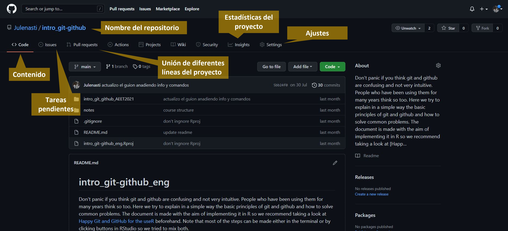
Flujo de trabajo en Git y GitHub
Git es capaz de rastrear todos los archivos contenidos en un repositorio. Para comprender cómo Git registra los cambios y cómo podemos compartir dichos cambios con nuestros colaboradores es importante entender cómo se estructura Git y cómo se sincroniza con GitHub. Hay cuatro “zonas” de trabajo:
Directorio de trabajo (working directory): es donde se está trabajando. Esta zona se sincroniza con los archivos locales del ordenador.
Área de preparación (staging area o Index): es la zona intermedia entre el directorio de trabajo y el repositorio local de Git. Es la zona de borradores. El usuario debe seleccionar los archivos que se van a registrar en la siguiente “captura” de Git.
Repositorio local (local repository o HEAD): es donde se registran todos los cambios capturados por Git en tu ordenador.
Repositorio remoto (remote repository): es donde se registran todos los cambios capturados por Git en la nube (GitHub).
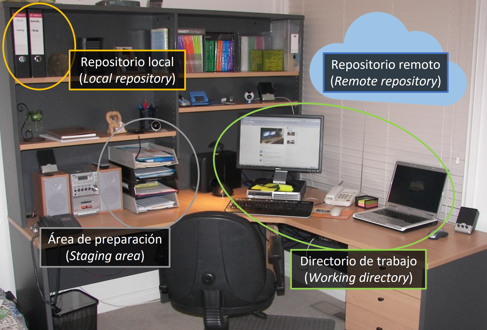
¿Cómo moverse de una zona a otra?
Se puede hacer mediante línea de comandos en la terminal y también mediante la pestaña integrada en RStudio, pero el proceso es el mismo.
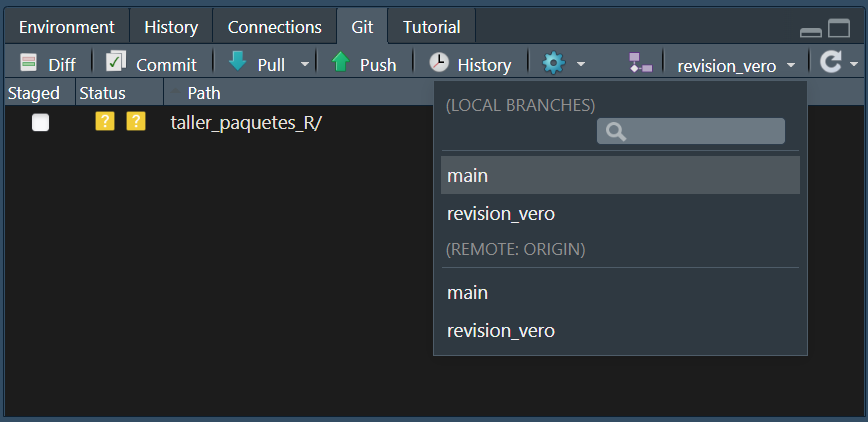
Al principio todos los cambios realizados aparecen en amarillo porque Git no sabe que hacer con ellos. Estamos en el directorio de trabajo y puede que no nos interese guardar todos los cambios para el futuro.
Para añadir un cambio del directorio de trabajo al área de preparación hay que utilizar git add (en la pestaña Git de RStudio se hace marcando la casilla Staged del archivo). Este comando indica a Git que se quieren incluir las actualizaciones de algún archivo en la próxima “captura” del proyecto y que Git las registre. Sin embargo, git add no afecta al repositorio local.
Para registrar los cambios que nos interesen hay que utilizar git commit (en la pestaña Git de RStudio se hace clickando el botón “Commit”). Al ejecutar git commit se hace una “captura” del estado del proyecto. Junto con el commit se añade un mensaje con una pequeña explicación de los cambios realizados y por qué (p. ej. “incluyo las referencias formateadas”). Cada git commit tiene un SHA (Secure Hash Algorithm) que es un código alfanumérico que identifica inequívocamente ese commit (p. ej. 1d21fc3c33cxxc4aeb7823400b9c7c6bc2802be1). Parece difícil de entender, pero no te preocupes, sólo tienes que recordar los siete primeros dígitos 1d21fc3 😮(es broma). Con el SHA siempre se pueden ver los cambios que se hicieron en ese commit y volver a esa versión fácilmente.
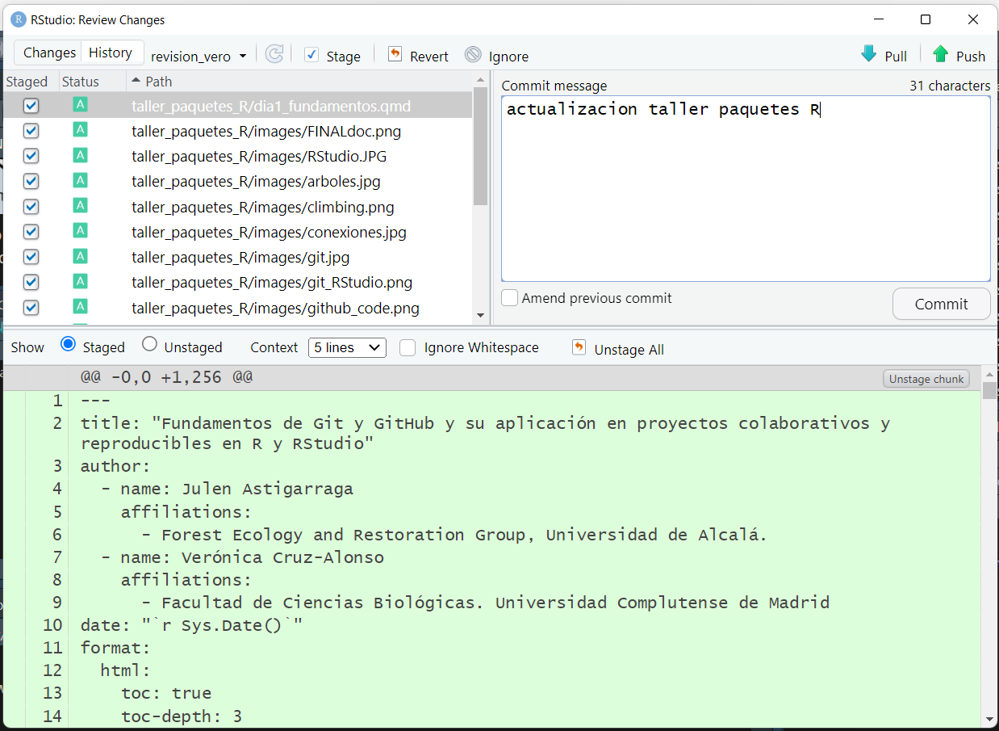
💡Usar git commit es para el proyecto como usar anclajes cuando estamos escalando una pared de roca. Desarrollar un script sin commits es como escalar sin asegurarse: puedes avanzar mucho más rápido a corto plazo, pero a largo plazo las probabilidades de fallo catastrófico son altas. Por otro lado, hacer muchos commits va a ralentizar tu progreso. Lo mejor: usar más commits cuando estás en un territorio incierto o peligroso.
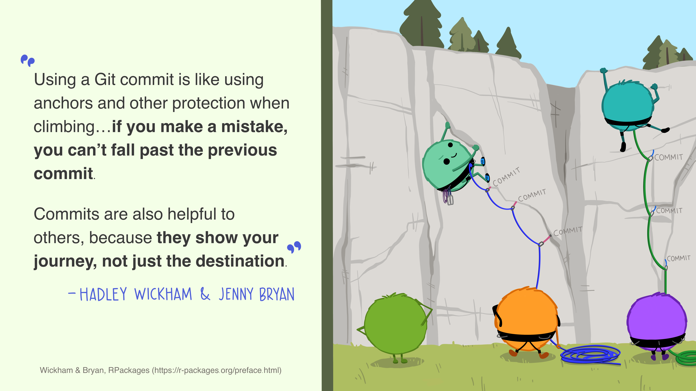
Por último, git push permite subir los cambios que hemos hecho a GitHub y quedarán visibles para nuestros colaboradores (en la pestaña Git de RStudio se hace clickando el botón “Push”). Básicamente, git commit registra los cambios en el repositorio local y git push actualiza el repositorio remoto con los cambios y archivos asociados.
Cuando se retoma un proyecto tras horas, días o incluso meses, con git pull se descargan todas las actualizaciones que haya en GitHub (nuestras o de nuestros colaboradores), que se fusionarán (merge) con el último commit en nuestro repositorio local (en la pestaña Git de RStudio se hace clickando el botón “Pull”).
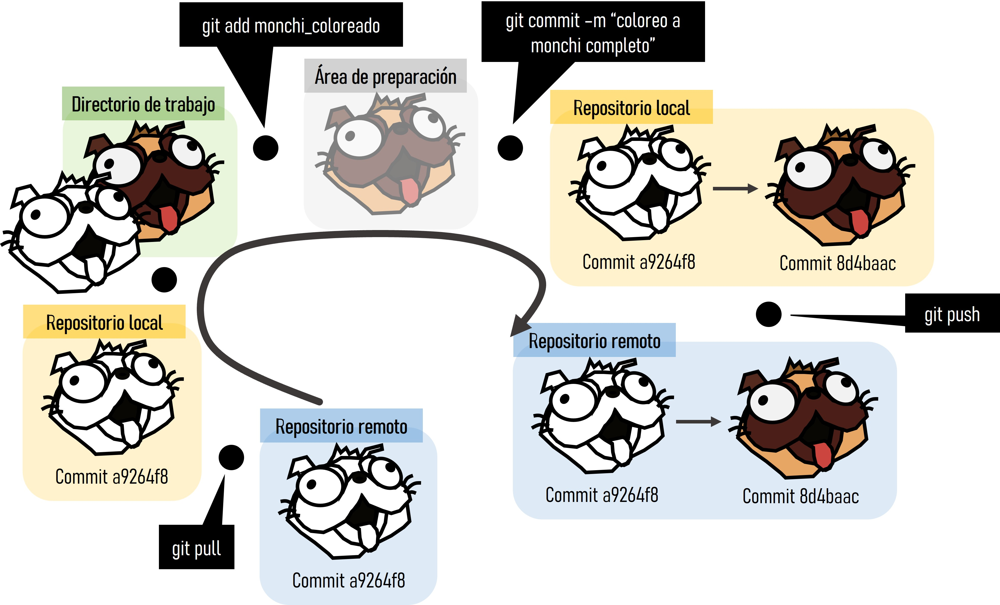
Además de los botones principales anteriormente descritos, en la pestaña Git de RStudio podemos observar el botón “Diff” que muestra los cambios que se han hecho a cada archivo desde el último commit y las ramas. Clickando con el botón derecho del ratón podemos abrir los archivos que han sido modificados mediante “Open file” y con el botón “Revert” volvemos al estado del último commit (⚠️cuidado con esto porque te borrará los cambios realizados en tu directorio de trabajo).
En el repositorio remoto de GitHub, en la pestaña Code podemos observar el contenido de nuestro proyecto, incluyendo cada commit realizado:
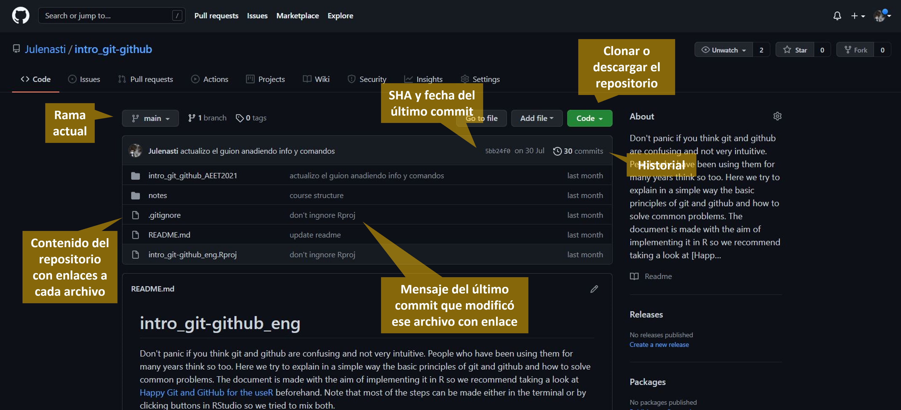
Trabajo colaborativo
Aunque Git y GitHub facilitan el control de versiones de nuestros proyectos individuales, su máxima potencialidad se despliega al trabajar en equipo ya que facilitan el seguimiento del trabajo de todos los colaboradores y la integración ordenada de cada parte en un producto final.
Para dar acceso de edición a tus colaboradores, en la página principal de nuestro proyecto en GitHub entramos en “Settings -> Access -> Collaborators -> Manage Access -> Add people”. Los colaboradores pueden crear su copia local del proyecto de control de versiones clonando el repositorio remoto.
Ramificación
Git permite crear una “rama” (branch) paralela al proyecto si se desea seguir una línea independiente de trabajo, bien por ser diferente de la principal (p. ej. probar un nuevo análisis) o bien para desarrollar específicamente una parte del proyecto (p. ej. trabajar sólo en la escritura de los métodos de un artículo mientras otros colaboradores trabajan en otras secciones). Las ramas permiten trabajar en el proyecto sin interferir con lo que están haciendo los compañeros. En Git, una rama es un commit al que se le da un nombre y que contiene un “enlace” (puntero o pointer) a un SHA específico que es el origen de la rama. La rama main es la rama por defecto cuando se crea un repositorio y a partir de ella se suelen crear las demás.
Las ramas se pueden generar en la terminal y en la pestaña Git de RStudio. En la pestaña Git se generan mediante el botón “New Branch”. Al lado de “New Branch” podemos observar todas las ramas que contiene el repositorio y nos permite cambiar de rama fácilmente clickando en ellas.
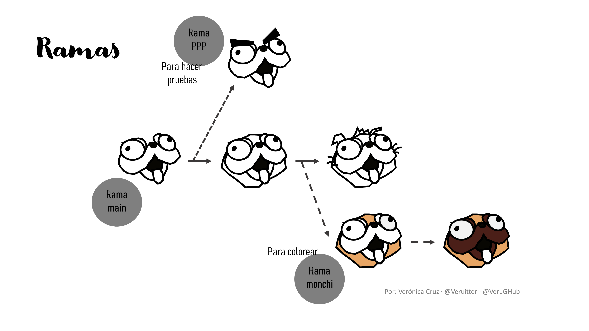
¿Cómo se unen distintas ramas?
Cuando el trabajo desarrollado en una rama se da por finalizado hay que hacer la unión a la rama principal (“main”). Esto se puede hacer en la terminal y con el botón “pull request” en la página del proyecto en GitHub siguiendo los pasos que se explican a continuación.
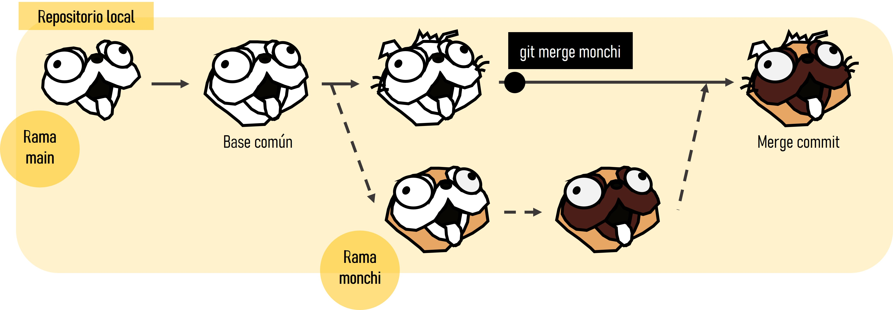
Una vez que hemos realizado los cambios que queríamos en la rama y están subidos a GitHub (git add + git commit + git push), en GitHub aparece la opción de “Compare & pull request”. Aquí se genera el pull request (“Create pull request”) añadiendo un mensaje para saber lo que se está uniendo. GitHub os indicará si existen conflictos o no. Si no existen conflictos, podréis realizar el pull request sin problema y, si existen conflictos, hay que resolverlos manualmente. Esto ocurrirá si en las dos ramas se han cambiado las mismas líneas de un archivo, o si se han cambiado dos archivos que no son de código. Hay que generar el pull request y “Resolve conflicts”.
Git muestra dónde están los conflictos así:
<<<<<<código del main=======código de la rama a unir>>>>>>
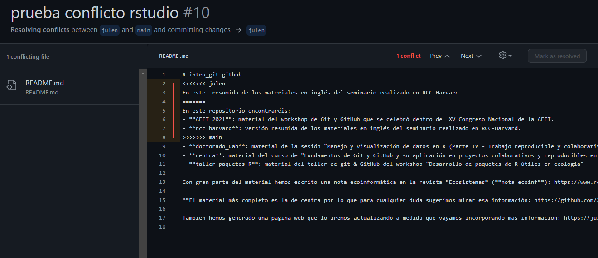
Para solucionarlo hay que escoger los cambios de la rama principal o de la rama a unir según corresponda. Una vez solucionados, Git permite completar el merge (es decir, un nuevo commit que contendrá las ramas fusionadas). La mejor manera de evitar conflictos o por lo menos reducir su dificultad es realizar cambios pequeños y sincronizar frecuentemente con GitHub, y tener una comunicación fluida con los colaboradores.
💡Aquí (en la sección de “Otros comandos útiles”) podéis ver cómo borrar ramas y otros comandos útiles
Introducctión a Quarto y R Markdown
R Markdown (https://rmarkdown.rstudio.com/) empezó en 2012 con el objetivo de facilitar la reproducibilidad en R. Ha sido desarrollado principalmente por Yihui Xie. R Markdown es un formato de archivo para crear documentos dinámicos con R que se apoya en knitr (paquete para generación de informes dinámicos en R) y Pandoc (conversor de documentos).
R Markdown utiliza programación literaria, un paradigma de programación creado por Donald E. Knuth que consiste en escribir en un lenguaje humano (p. ej. inglés, castellano) con fragmentos de código e instrucciones. R Markdown está escrito en Markdown y contiene partes de código de R (o algún otro lenguaje de programación) integrado.
Quarto (https://quarto.org/) es un sistema de publicación científica y técnica de código abierto construido sobre Pandoc. Convierte los formatos de texto plano o los formatos mixtos (p. ej. .qmd, .Rmd, .md, .ipynb) en informes estáticos PDF, word, HTML, etc. Puede entrelazar texto narrativo y código para producir resultados con un formato elegante en forma de documentos, páginas web, entradas de blog, libros, etc.
La extensión de Quarto es .qmd y utiliza filtros Lua que es el lenguaje de extensión de Pandoc (https://quarto.org/docs/extensions/lua.html). Para ello, Quarto utiliza un engine como knitr para ejecutar el código y generar una salida temporal .md. El archivo .md se procesa mediante Pandoc y los filtros Lua de Quarto + Bootstrap CSS para HTML o LaTeX para PDF.
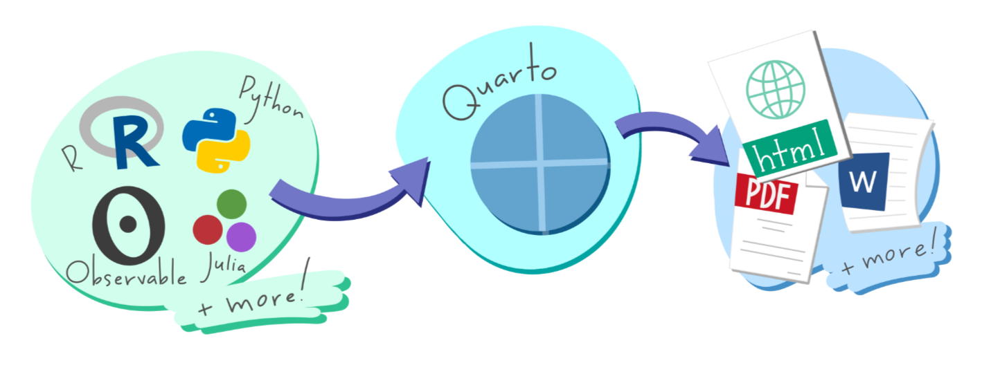
La diferencia principal de Quarto respecto a R Markdown es que Quarto se ha generado para la colaboración de más de una comunidad (es decir, no solo usuarios de R o Python) y utiliza una sintaxis y formato compartido entre distintos lenguajes. Además, a medida que se añadían más capacidades a R Markdown a través de paquetes externos de R, la sintaxis para las tareas básicas se volvía incoherente.
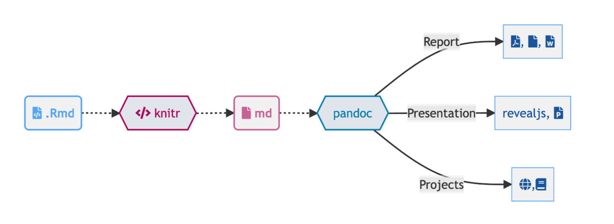
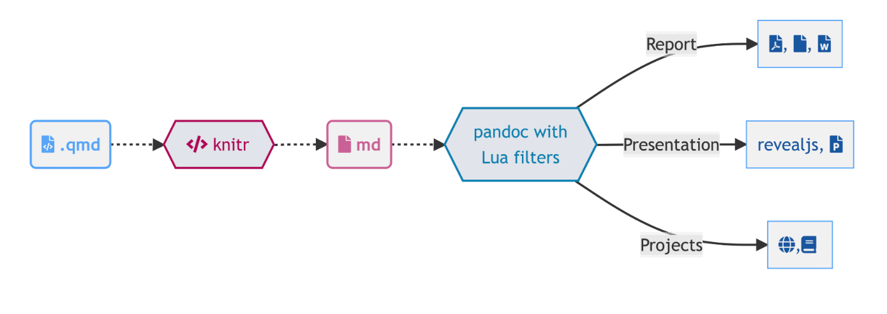
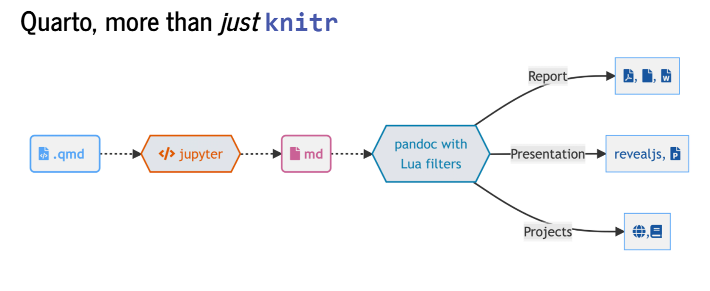
Quarto viene preinstalado con las últimas versiones de RStudio. No se tienen que instalar diferentes paquetes para crear diferentes formatos de salida: https://quarto.org/docs/output-formats/all-formats.html. R Markdown todavía se mantiene, pero la mayoría de las nuevas características serán incorporadas en Quarto. En cualquier caso, sea cual sea el sistema, Quarto y R Markdown aumentan de la eficiencia de trabajo (a medio-largo plazo), permiten centrarse en el texto sin perder tiempo en el diseño y permiten la producción de documentos de alta calidad.
Fundamentos básicos de Quarto
Para crear un archivo Quarto: File -> New File -> Quarto document. Debemos cambiar el modelo mental: ahora tendremos un documento fuente de texto plano y a partir de dicho documento generamos un documento renderizado. Estos archivos tienen tres componentes principales: (i) metadatos, (ii) texto, (iii) código.
Metadatos: se escriben entre
`---`al comienzo del archivo. Utiliza la sintaxis de YAML (Yet Another Markup Language). Se utiliza para evitar teclear manualmente todas las opciones que pueden afectar al código, al contenido y al proceso de renderizado cada vez que renderizamos el archivo. ¡La sangría es importante!Texto: sintaxis Markdown. Markdown es un formato de texto plano que está diseñado para ser fácil de escribir y, aún más importante, fácil de leer.
Código: puede ser de dos tipos:
- Code chunk (bloque de código): se escribe
```{r} codigo aqui```; entre corchetes se indica el lenguaje. Se puede escribir manualmente, utilizar el atajoCtrl + Alt + I(OS X:Cmd + Option + I), utilizar el comandoInsert -> Executable Cellen la barra de herramientas del editor. - Inline (en línea): se escribe código aquí (entre comillas invertidas; ver código fuente).
- Code chunk (bloque de código): se escribe
Bloques de código
La ejecución de los bloques de código puede personalizarse. Las opciones de ejecución se escriben al principio del bloque enumeradas con #| (hash pipe) seguido de la opción a personalizar y las opciones elegidas. El hash pipe es la sintaxis preferida de Quarto, aunque es compatible con la sintaxis anterior de R Markdown, donde la estructura de las opciones es tipo key: value y se especifica dentro de las llaves. El hash pipe le añade más consistencia entre los diferentes engine (Jupyter, knitr) y nos da más control sobre el orden o espacio de las opciones del chunk (no está limitado a una línea de opciones). No hay ningún atajo para un hash pipe pero si escribes uno los siguientes se añadirán automáticamente cuando le das a enter.
Ejemplos de bloques de código:
💡 Conviene nombrar los chunks para saber qué función cumple cada uno.
[1] "awk" "bash" "coffee" "gawk" "groovy" "haskell"
[7] "lein" "mysql" "node" "octave" "perl" "php"
[13] "psql" "Rscript" "ruby" "sas" "scala" "sed"
[19] "sh" "stata" "zsh" "asis" "asy" "block"
[25] "block2" "bslib" "c" "cat" "cc" "comment"
[31] "css" "ditaa" "dot" "embed" "eviews" "exec"
[37] "fortran" "fortran95" "go" "highlight" "js" "julia"
[43] "python" "R" "Rcpp" "sass" "scss" "sql"
[49] "stan" "targets" "tikz" "verbatim" "ojs" "mermaid" x = "R mola!"
print(x.split(" ")) ['R', 'mola!']library(ggplot2)
names(cars) [1] "speed" "dist" ggplot(cars, aes(speed, dist)) +
geom_point() +
geom_smooth() 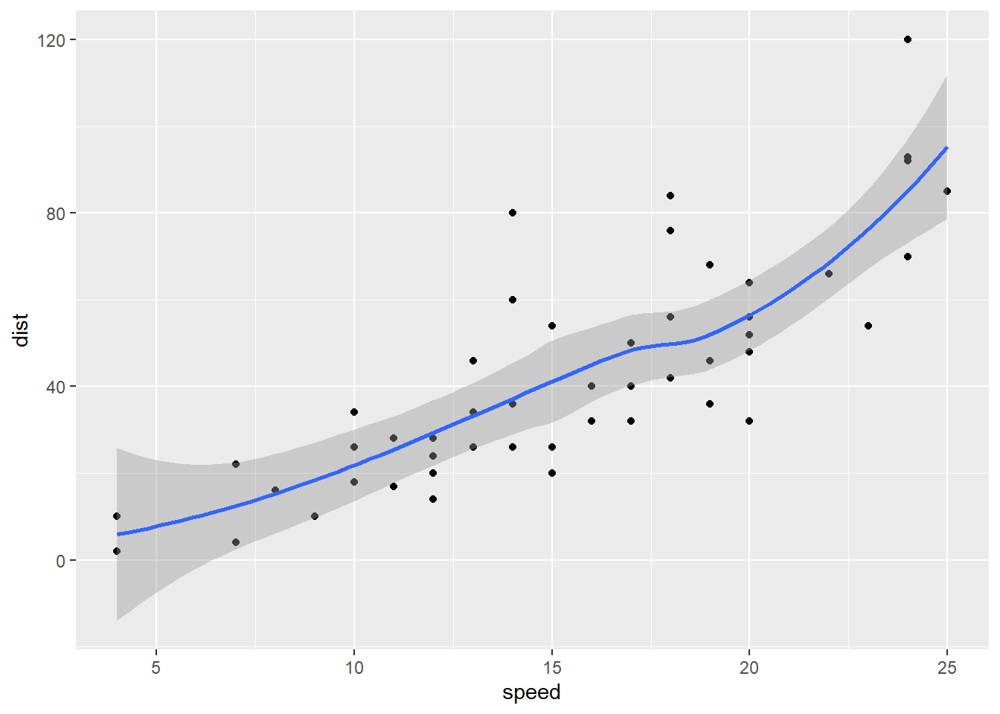
💡 Las opciones de ejecución tienen tabulación enriquecida, es decir, inicias una palabra y tabulas para completar o Ctrl + espacio para ver todas las opciones disponibles.
2 * 2library(gt)Warning: package 'gt' was built under R version 4.4.3library(palmerpenguins)Warning: package 'palmerpenguins' was built under R version 4.4.3head(penguins) |>
gt() |>
tab_style(
style = list(
cell_fill(color = "lightblue"),
cell_text(style = "italic")
),
locations = cells_body(
columns = bill_length_mm,
rows = bill_length_mm < 37
)
)| species | island | bill_length_mm | bill_depth_mm | flipper_length_mm | body_mass_g | sex | year |
|---|---|---|---|---|---|---|---|
| Adelie | Torgersen | 39.1 | 18.7 | 181 | 3750 | male | 2007 |
| Adelie | Torgersen | 39.5 | 17.4 | 186 | 3800 | female | 2007 |
| Adelie | Torgersen | 40.3 | 18.0 | 195 | 3250 | female | 2007 |
| Adelie | Torgersen | NA | NA | NA | NA | NA | 2007 |
| Adelie | Torgersen | 36.7 | 19.3 | 193 | 3450 | female | 2007 |
| Adelie | Torgersen | 39.3 | 20.6 | 190 | 3650 | male | 2007 |
Elementos del texto
Los elementos que se introducen en el texto necesitan especificarse con alguna simbología (italics, bold, headers, lists, links, images, R codes, tables, page break, superscripts…). Para buscar ayuda sobre como escribir el texto plano: Help -> Markdown Quick Reference.
Referencias: (Blischak, Davenport, and Wilson 2016)
Formato: negrita, cursiva, subíndice1, superíndice2, código, hipervínculo, notas al pie1
Títulos: # primer nivel; ## segundo nivel…
Listas y sublistas: *, -, +
Citas:
“R Markdown es maravilloso pero ojo con Quarto”
— Julen Astigarraga
Fórmulas:
\(f(os) = {esta \choose gustando} esto^{?} (1-p)^{n-k}\)
Comentarios:
Tablas:
| Col1 | Col2 | Col3 |
|---|---|---|
Figuras:
Videos:
📝Ejercicio
Genera un documento Quarto para resolver el caso práctico del curso. Incluye por ahora los metadatos y, al menos, un bloque de código y un texto.
¿Qué hago con mi .Rmd o .ipynb existentes?
¡No pasa nada! La mayoría de los .Rmd o .ipynb existentes se pueden convertir as-is a través de Quarto. Para hacerlo a través de la línea de comandos de la terminal se escribe:
quarto render archivo.Rmd --to html
Además existen distintas opciones para convertir archivos .Rmd a .qmd:
Cambiar
.Rmda.qmd(esto siempre usará Quarto para la renderización)Cambiar la salida YAML:
html_documentaformat: htmlknitr::convert_chunk_header("archivo.Rmd", "archivo.qmd")
No tienes que convertir la sintaxis de todos tus documentos antiguos. Quarto es compatible con versiones anteriores de R Markdown.
Renderización
Para compilar un archivo estático, necesitamos hacer un último paso. En RStudio, la compilación o renderización es un trabajo de fondo. Esto evita que el renderizado abarrote la consola de R y así es fácil de detener.
💡Con el editor visual de RStudio puedes ver en tiempo real cómo es la conversión entre el texto plano y word, HTML, etc.
Existen tres formas para renderizar un documento en Quarto:
Dentro de RStudio puedes usar el botón de Render (atajo:
Ctrl + Shift + K; OS XCmd + Shift + K).En el terminal mediante quarto render: 🤓
quarto render archivo.qmd (por defecto a HTML)
quarto render archivo.qmd --to pdf
quarto render archivo.qmd --to docx
quarto --help
💡Sobre la importancia del YAML: las especificaciones del YAML se puede incluir también en el terminal, pero si las hemos incluido en el YAML no tendremos que escribirlas cada vez.
quarto render archivo.qmd --to html
quarto render archivo.qmd --to html -M code-fold:true
- En la consola de R mediante el paquete
quarto
library(quarto)Warning: package 'quarto' was built under R version 4.4.3# quarto_render("archivo.qmd")
# quarto_render("archivo.qmd", output_format = "pdf")📝Ejercicio
En tu documento de Quarto configura los bloques de código para que en la renderización se ejecuten, no aparezcan los warnings y, además, se visualice el código que has usado. Renderiza el documento.
Generando el documento final
Formato
Títulos coloreados en azul, el texto no está con un espaciado doble, no hay números de línea y… ¡manuscrito rechazado! Vamos a mandarlo a otra revista pero… ¡NO VAMOS A EDITAR NADA EN WORD! Podemos asegurarnos de que el .docx creado tenga siempre el formato deseado utilizando una plantilla .docx. Para utilizarla, la plantilla debe colocarse en la misma carpeta que el archivo .qmd y debemos hacer un pequeño ajuste en el YAML.
Primero generamos la plantilla en el terminal:
quarto pandoc -o plantilla.docx --print-default-data-file reference.docxModificamos la plantilla generada como la queramos utilizando los estilos de Word.
💡Fíjate en este link para saber como modificar una plantilla de Word.
Lo añadimos al YAML
# format:
# docx:
# reference-doc: plantilla.docxReferencias
Para introducir citas y referencias en nuestro texto en Quarto utilizaremos BibTeX y así evitaremos tener que hacerlo manualmente. Con BibTex, en lugar de escribir la cita se escribe una “clave” única (clave de citación: (cita?)) cada vez que se cita una referencia. Esto permite a los autores cambiar los estilos de las referencias sin tener que reformatear nada manualmente (por ejemplo, si hay que enviar un manuscrito a una revista diferente para su publicación).
💡 Recomendamos utilizar Zotero como gestor bibliográfico porque está incluido en RStudio, lo que facilita la inclusión de citas y referencias, pero se puede utilizar cualquier otro gestor.
Para añadir las referencias en algún lugar concreto del archivo (ver código fuente):
Blischak, John D., Emily R. Davenport, and Greg Wilson. 2016. “A Quick Introduction to Version Control with Git and GitHub.” PLOS Computational Biology 12 (1): e1004668. https://doi.org/10.1371/journal.pcbi.1004668.
Galeano, Javier. 2018. “¿Por qué usar GitHub? Diez pasos para disfrutar de GitHub y no morir en el intento.” Ecosistemas 27 (2): 140–41. https://doi.org/10.7818/ECOS.1604.
Perez-Riverol, Yasset, Laurent Gatto, Rui Wang, Timo Sachsenberg, Julian Uszkoreit, Felipe da Veiga Leprevost, Christian Fufezan, et al. 2016. “Ten Simple Rules for Taking Advantage of Git and GitHub.” PLOS Computational Biology 12 (7): e1004947. https://doi.org/10.1371/journal.pcbi.1004947.
Ram, Karthik. 2013. “Git Can Facilitate Greater Reproducibility and Increased Transparency in Science.” Source Code for Biology and Medicine 8 (1): 7. https://doi.org/10.1186/1751-0473-8-7.
💡 Para aplicar un formato específico a las referencias, en Zotero Style Repository puedes descargar el archivo de estilo correspondiente (.cls) y especificarlo en los metadatos (ver ejemplo en el archivo .qmd).
📝Ejercicio
Genera una plantilla de formato para el caso práctico y modifica los colores, tamaño de los títulos, etc. Después, añade la plantilla a los metadatos y renderiza el documento.
Más ideas para la optimización de los flujos de trabajo
Estilo de programación
Uso de bases de datos en la nube
Se pueden descargar los datos actualizados cada vez que se vayan a utilizar o tener los datos almacenados en carpetas compartidas pero con acceso local.
library(googledrive)
# drive_download(file = "https://docs.google.com/spreadsheets/d/1gOII3LXas0wkS3QCZzFiqC5sGbCaAoHl6MiHGRxssPw/edit?gid=0#gid=0", path = "doctorado_ucm/data/raw_data.xlsx", overwrite = TRUE)
library(readxl)
raw_data <- read_excel("doctorado_ucm/data/raw_data.xlsx", sheet = 1)Algunos enlaces interesantes
:::
Footnotes
hello world↩︎